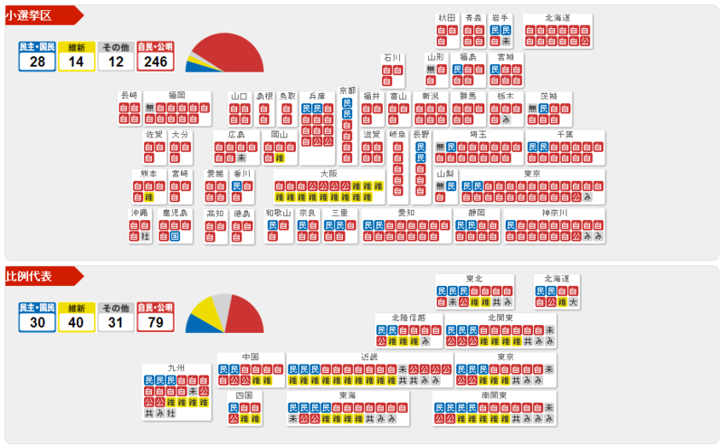

今回の選挙について、そろそろ一言言っておくか
公開日：

自民の圧勝確実で、維新がどれだけ伸びるか、民主がどれだけボコられるかが注目だった今回の総選挙。相も変わらず“みんなの党”にいれた僕にとっては、ちょっと蚊帳の外でした。
そのみんなの党も、選挙前は維新との合流に色気を見せたり（しかも断られてるしｗ）、有権者の顔色を窺って消費税増税に距離をとってみたりと、個人的には少し不満で「次回の投票はちょっと考え直さなければいけないなぁ」と思ってもみたり。まぁ、結果的には議席倍増なのだけど、あんなの別に増えなくてもいいわけで*1。小泉新次郎氏じゃないけど、消極的に選択されることに意味はない。
当選者の有無にかかわらず泰然自若と理念を掲げる党であってほしいものですけど*2、「職業政治家制度」のもとでは難しいですね。落選した議員をプールしておく仕組みがあればいいのですけど。
小選挙区制度について
で、今回の総選挙で一番興味深かったのは、小選挙区制度の欠点がモロにでたところ。まぁ、文句があれば地盤が盤石なときに改正すべきであって、いまさら恨み節を言うのはどうかと思うのですけど、それにしてもすごい結果だなぁ、と。
小選挙区の結果にはびっくりした人も多いと思う。どっちかっていうと比例の方が実際の民意に近いイメージ。制度にいちゃもんをつけるのはどうかと思うけれど*3、「衆院で圧倒的な議席を得て政権に復帰する自民党だが、個々の投票行動の積み重ねと配分された議席数との間には、もしかしたら乖離があるということは肝に銘じておく必要がある」という意見にも首肯せざるを得ない。
得票が多ければ当選というのは、中学校の生徒会長選びでも適用される選挙の鉄則だ。今回の衆院選でも、全国３００選挙区で１位となった候補は当然、国会議員に選ばれる。２位でも１位との接戦率を示す「惜敗率」が高ければ、比例代表で復活当選だ。ここまでは、「得票の多い人が当選」という原則が保たれているといえる。
ところが、２位候補が落選したのに、それより得票が下回った候補が当選という選挙区が、全国に１５もあるのは、どういうことだろう。中には選挙区４位なのに復活した猛者もいる。
http://sankei.jp.msn.com/politics/news/121217/elc12121723080292-n2.htm
“比例復活”などという制度も、分かりずらく、バカらしい。ゲームとしては面白いが……ｗ
比例代表制度への一本化と参議院の再編成を
というわけで、個人的には衆議院選挙は比例代表制度へ一本化してほしいと願いたいところ。それも地区ブロックにわけず、全国単一ブロックで。このことには以下のメリットがある。
- 「一票の格差」問題が解消される
- 死票が少なくなる
- 選挙区の区割りで揉めずに済む
- 「党より人」ではなく「人より党」で選ぶようになる
- 地域のエゴを排除し、国政レベルで政策を問えるようになる
「一票の格差」問題が解消される / 死票が少なくなる / 選挙区の区割りで揉めずに済む
これは明らかだと思う。
明治学院大の川上和久教授（政治心理学）は「誰に入れたらいいか分からないが棄権はしたくないと悩んだ結果、白票を選択した有権者が多かったのではないか。今回は政党が乱立したが、政策に共感できる政党があっても、その党の候補者が選挙区にいないケースがあったことも影響した可能性がある」と指摘する。
http://www.asahi.com/politics/update/1218/TKY201212170931.html
共産党以外の場合では、こういうケースも少なくないだろう。実際、小選挙区で候補者がいない場合、僕は支持政党の名前を書いて投票している（支持政党が選挙協力とやらをしている場合でも無視）。
「党より人」ではなく「人より党」で選ぶようになる
「党より人」とは、茨城7区の 中村喜四郎 - Wikipedia のスローガンなのだそうだ。このブログでは一貫して「人より党」で選ぶことをお勧めしている（政治家と政党について - だるろぐ）が、だいぶ筆足らずなので今度また機を改めて書きたい。
全国比例代表に一本化された暁には、「除籍・離党で議席を失う」とでも規定しておけば、政党の意義・役割はより大きく、意義のあるものになると思う。
アメリカの二大政党制のいいところは、有権者による政党の統制*4、政党による議員の統制がうまく機能しているところにあると思うんだよね。選択肢が二つに整理されているところがいい、というわけじゃないんだ。
地域のエゴを排除し、国政レベルで政策を問えるようになる
“国政”選挙なのだから、国レベルのことだけを考えればよい。本当なら、国政選挙ではマクロ経済や外交、社会保障についてもっと議論すべきじゃないのか。
ただ、それだけでは極端なのは確か。
そこで参議院を解体し、都道府県がそれぞれ“地元の賢人”を議員として送り出す方式にする。選挙なしで、知事の推薦により、都道府県の規模に応じた人数を送り出すようにすればよいだろう。こうすれば、参議院の独自性
- 選挙マッチョ*5じゃない有識者による討議
- 地方の都合も考慮に入れた、衆議院とは違う視座からの政策チェック
が保たれる。
この考えは 討議と代表の分離、二院制 - だるろぐ の最後で示唆したものだけど、まだ夢想レベル。道州制でも何でもいいのだけど、地方分権化と一体で進めなくてはならないのだけど……どっかの党に提案して実現できる案にねりあげてもらえないかね。
ともあれ、参議院が機能していないのは、二院制が悪いのではなく、その運用が悪いからに過ぎない。両議院とも、被選挙権に違いがあるだけで、ほとんど同じ方法で選んでたのでは、芸がなさすぎる。もっと活用すればいいのになぁ、と思う。
戦後最低の投票率
マニフェストを守らなかった民主党のせい。あれだけ「行っても無駄」と思い知らされれば、行かない人が増えても仕方なかろう。
まぁ、自分は行くけど。他人が何を考えているのかと、自分の意思を表明することとは、本来何の関係もない。